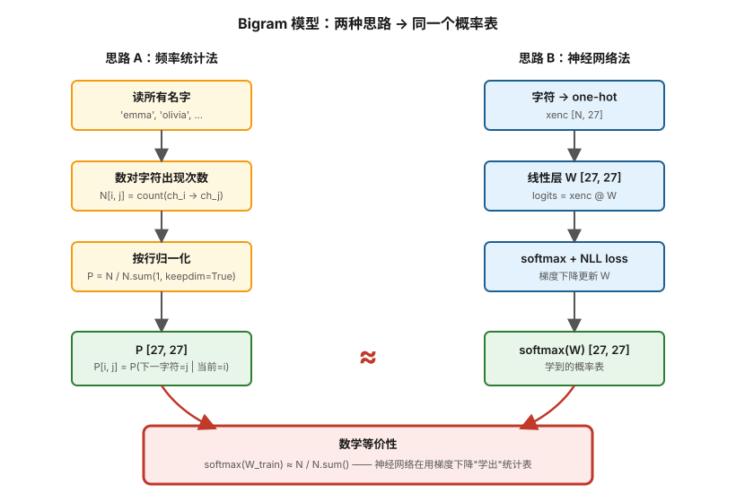
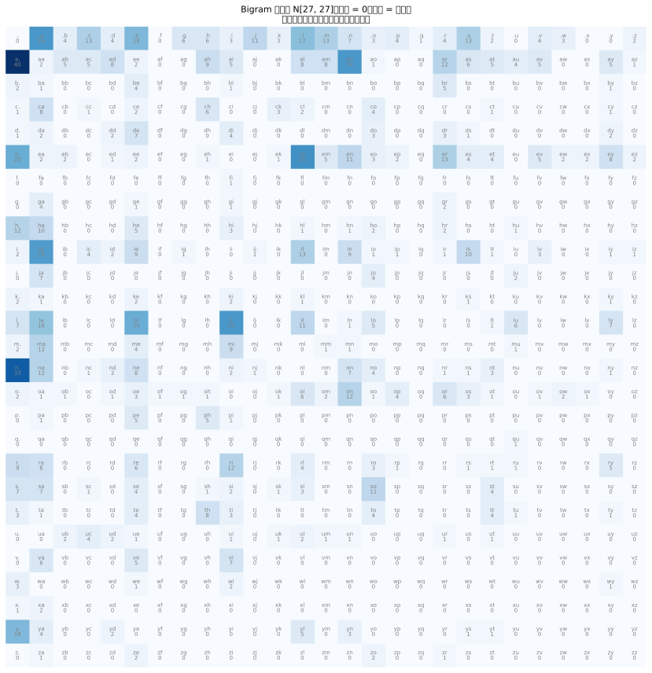

Micrograd 阶段的局限性：
| 维度 | Micrograd | Makemore Part 1 (Bigram) |
|---|---|---|
| 任务 | 4 个 2D 点的分类 | 真实的语言建模任务 |
| 数据规模 | 4 条 | 32000 个名字 |
| 模型类型 | 玩具 MLP | 字符级生成模型（能采样新名字） |
| 概率视角 | 没有 | 第一次系统接触概率语言模型 |
| 两种思路对比 | 没有 | 计数法 vs 神经网络法等价 |
softmax(W) 训练后会逼近 N / N.sum() —— 这是理解后面所有 LLM 的关键起点。

这是整个 Karpathy 系列的第一个"啊哈时刻"：原来神经网络在做的事情，就是用梯度下降"学出"那张统计概率表。
| 参数 | 取值 | 含义 |
|---|---|---|
vocab_size | 27 | 26 字母 + . 起止符 |
| 神经网络权重 | W [27, 27] | 729 个参数 |
| 学习率 | 50 | （比常规网络大得多，因为只有 729 个参数） |
| 训练步数 | 100 ~ 200 | 全量梯度下降 |
| 数据来源 | names.txt | 32033 个名字 |
参数量对比：
words = open('names.txt').read().splitlines()
# words = ['emma', 'olivia', 'ava', 'isabella', ...]
chars = sorted(list(set(''.join(words))))
stoi = {s: i+1 for i, s in enumerate(chars)}
stoi['.'] = 0
itos = {i: s for s, i in stoi.items()}
# stoi['a']=1, stoi['b']=2, ..., stoi['.']=0N = torch.zeros((27, 27), dtype=torch.int32)
for w in words:
chs = ['.'] + list(w) + ['.']
for ch1, ch2 in zip(chs, chs[1:]):
ix1 = stoi[ch1]
ix2 = stoi[ch2]
N[ix1, ix2] += 1
# 加一平滑（避免 log(0)）
P = (N + 1).float()
P /= P.sum(1, keepdim=True) # 按行归一化(N + 1) 是 Laplace 平滑，防止某个字符组合从未出现导致 log(0) = -inf。
训练完后 N 的可视化（用 ~200 个常见名字生成的小数据集示例）：

g = torch.Generator().manual_seed(2147483647)
for _ in range(5):
out = []
ix = 0 # 从 . 开始
while True:
p = P[ix]
ix = torch.multinomial(p, num_samples=1, replacement=True, generator=g).item()
out.append(itos[ix])
if ix == 0:
break
print(''.join(out))自回归采样：用上一个字符的概率分布采样下一个字符，循环直到生成 .。
log_likelihood = 0.0
n = 0
for w in words:
chs = ['.'] + list(w) + ['.']
for ch1, ch2 in zip(chs, chs[1:]):
ix1, ix2 = stoi[ch1], stoi[ch2]
prob = P[ix1, ix2]
log_likelihood += torch.log(prob)
n += 1
print(f'nll = {-log_likelihood/n:.4f}') # 平均负对数似然# 构建训练集
xs, ys = [], []
for w in words:
chs = ['.'] + list(w) + ['.']
for ch1, ch2 in zip(chs, chs[1:]):
xs.append(stoi[ch1])
ys.append(stoi[ch2])
xs = torch.tensor(xs) # [N]
ys = torch.tensor(ys) # [N]
# 模型参数
g = torch.Generator().manual_seed(2147483647)
W = torch.randn((27, 27), generator=g, requires_grad=True)
# 训练循环
for k in range(200):
# forward
xenc = F.one_hot(xs, num_classes=27).float() # [N, 27]
logits = xenc @ W # [N, 27]
counts = logits.exp() # softmax 上半部分
probs = counts / counts.sum(1, keepdims=True) # softmax 下半部分
loss = -probs[torch.arange(num), ys].log().mean() # NLL
# backward
W.grad = None
loss.backward()
# update
W.data += -50 * W.grad# 训练完后比较
softmax_W = F.softmax(W, dim=1)
P_count = (N + 1).float() / (N + 1).sum(1, keepdim=True)
print((softmax_W - P_count).abs().max()) # 接近 0两份概率表几乎完全一致 —— 神经网络确实在"学出"统计表。
虽然只是 bigram，但 Karpathy 在这里第一次系统引入了几个会贯穿后面所有 LLM 的概念：
.）→ 0~26F.one_hot(x) @ W 数学上等价于 W[x]（直接索引行）softmax(logits) 把任意实数变成概率分布P[当前字符] 中 multinomial 采样(N + 1) 防止某些字符组合概率为 0Perplexity = exp(NLL) 是更直观的版本不加平滑会导致 log(0) = -inf，loss 爆炸
用 (N + 1) 或者神经网络的"L2 正则"等价于平滑。
one-hot @ W 不是计算，是查表
F.one_hot(x) @ W 跟 W[x] 完全等价，但前者慢得多。PyTorch 提供 nn.Embedding 就是后者的封装。
W 初始化太大会让 softmax 一边倒
randn 默认方差 1，logits 范围可能 ±3，softmax 后非常 peaked。学习率得相应调大才能跳出，或者初始化时缩小。
NLL 的输入是概率，cross_entropy 的输入是 logits
F.cross_entropy(logits, y) 内部已经做了 log_softmax。不要再自己 softmax 然后送 cross_entropy，会数值不稳定。
probs[torch.arange(N), ys] 这种"花式索引"很关键
取每一行 ys[i] 那一列的概率，这是 PyTorch 计算 NLL 的标准写法。
Bigram 是所有现代 LLM 的"最简化版"：
| Bigram (Part 1) | MLP (Part 2) | GPT / Transformer |
|---|---|---|
| 上下文 = 1 字符 | 上下文 = 3 字符 | 上下文 = 2048+ token |
| 模型 = W [27, 27] | 模型 = 嵌入 + MLP | 模型 = 嵌入 + N 层 Transformer |
| 参数量 = 729 | 参数量 = 10000+ | 参数量 = 1B+ |
| 训练 = 全量梯度 | 训练 = mini-batch SGD | 训练 = 大规模分布式 |
| 采样 = multinomial | 采样 = multinomial | 采样 = multinomial（+top-k、温度等技巧） |
理解了 Bigram，你已经看到了语言模型的"灵魂": 输入 token 序列 → 模型给每个位置一个概率分布 → 用 NLL 训练 → 自回归采样生成。后面的所有进步，本质上都是在让"模型部分"变强。
(N + 1)，观察 loss 怎么变 NaNsoftmax(W) 和 N/N.sum() 会收敛到同一个东西？"